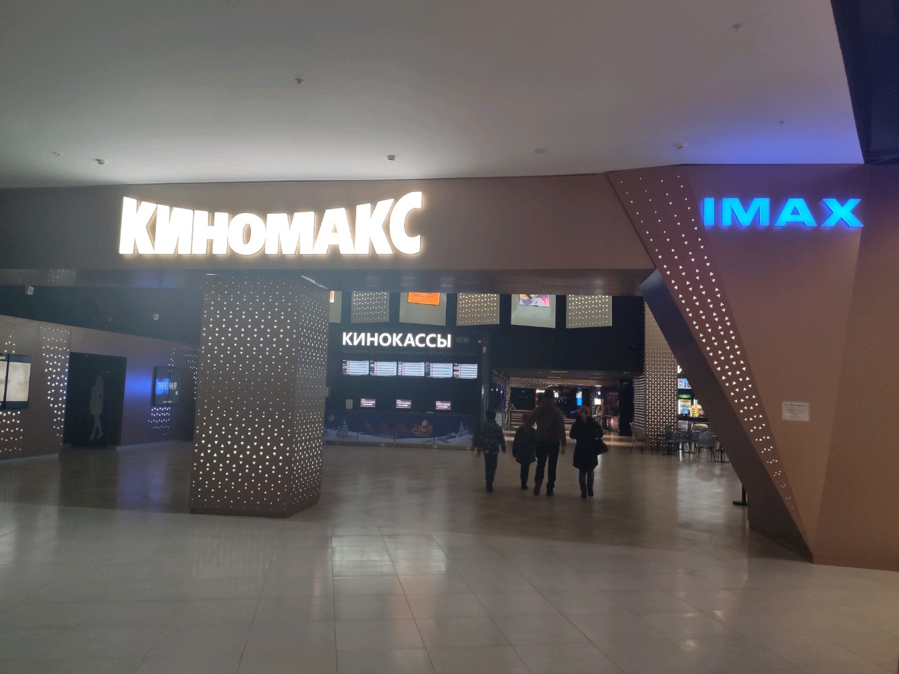

Регион:
Город:
Адрес:
Залы:
Описание:
Предысторией создания компании «Киномакс» стали 2 проекта по переоборудованию кинотеатров старого образца системами новейшего звукового и кино-, видеооборудования: в 1996 году в Москве открыл свои двери «Кодак-Киномир», а в 1997 году совместно с компанией «Госкино России» был переоборудован крупнейший на Урале киноцентр, получивший название «Челябинск-Урал».